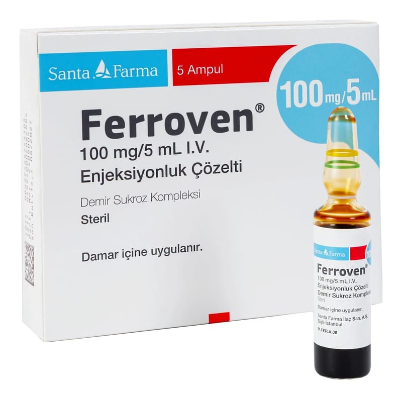

Ferroven 100 mg/5 ml IV Enjeksiyonluk Çözelti, 5 Adet

Ne için kullanılır
KT · Bölüm 1FERROVEN®her ml' sinde 20 mg demir (III)’e eşdeğer 350,8 mg ferrik hidroksit sükroz kompleksi içerir. FERROVEN®demir yetmezliğine bağlı kansızlık durumlarında damar içine uygulanmak üzere geliştirilmiş bir ilaçtır. FERROVEN®her karton kutuda, 5 adet, 5 ml kahverengi çözelti içeren renksiz cam ampuller şeklinde sunulmaktadır. FERROVEN®’in aktif maddesi olan demir, kanda oksijen taşınması için gerekli olan bir maddedir. Demir, kan hücreleri içinde hemoglobin adlı bir maddenin yapısında bulunur ve oksijen taşımakla görevlidir. FERROVEN®; Mide-bağırsak sisteminden demirin emilmesinde bozulma nedeniyle kansızlık gelişmişse,
Mide-bağırsak sistemindeki şiddetli kanama nedeniyle demir eksikliğine bağlı kansızlık gelişmişse, Midenin tamamının veya bir kısmının alınması nedeniyle demir eksikliği ve kansızlık gelişmişse, Demir eksikliğine bağlı kansızlığı olan ve ağız yoluyla alınan demiri tolere edemeyen hastalarda, Demir eksikliği nedeniyle kansızlık gelişen ve ağız yoluyla alınan demirin yeterli düzeyde etki göstermediği hastalarda, Doktorunuz, demir depolarınızın hızla doldurulmasının gerektiğine ve bu nedenle demir uygulanmasına karar verdiyse, Eritropoetin (EPO) (kan yapımını uyaran bir hormon) tedavisi alan diyalize (kanın temizlenmesi işlemi) bağımlı olan veya olmayan kronik böbrek yetmezliği hastalarında demir eksikliği varlığında kullanılır.
FERROVEN®gebeliğin ilk 3 aylık döneminde önerilmemelidir. Gebeliğin ikinci ve üçüncü 3 aylık döneminde ise hekimin zorunlu bulduğu hallerde kullanılmalıdır.